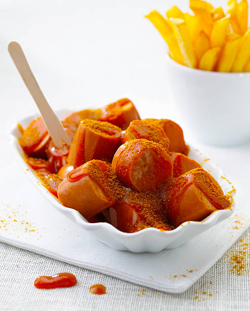

Home
Curried Sausages

Description
Curried sausages are a hearty, comforting dish made with thick, juicy sausages simmered in a rich, mildly spiced curry sauce. Often served with creamy mashed potatoes or steamed rice, this classic meal blends savoury flavours with a hint of sweetness from onions and tomato, creating a warming favourite perfect for chilly nights or nostalgic dinners.
Ingredients
- 500g Thick sausages
- 1tbsp Curry powder
- 1 Brown onion
Steps
- Brown the sausages in a pan, then slice into bit-sized pieces. to the side.
- Saute chopped onion until soft, then stir in curry powder and cook until fragrant.
- Add sausages back into the pan with a splash of water or stock and simmer until the sauce thickens.